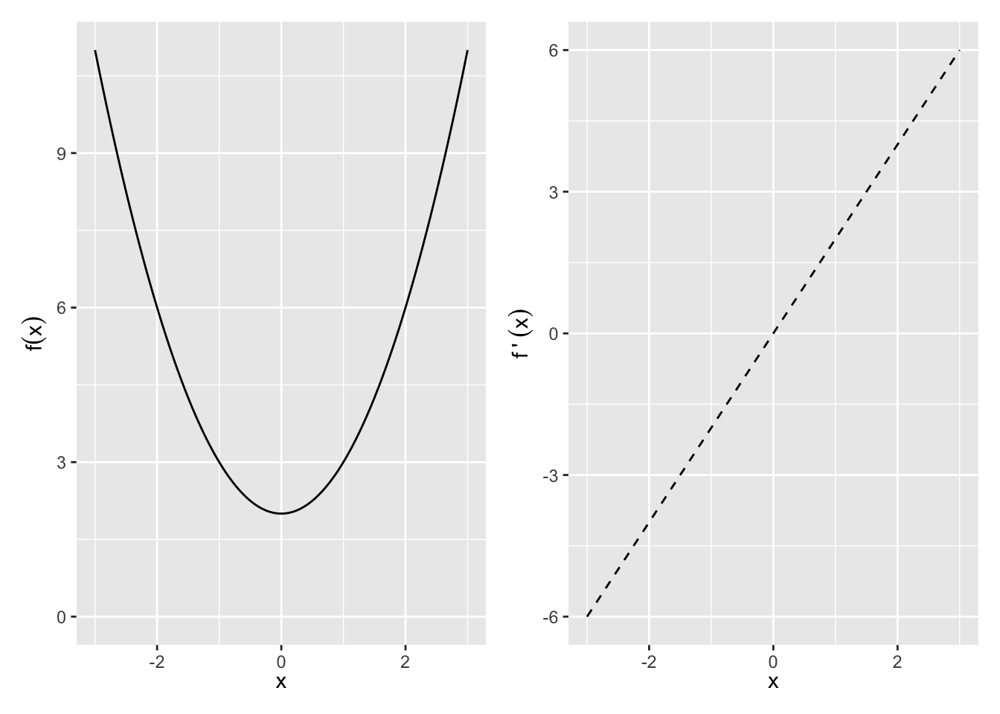
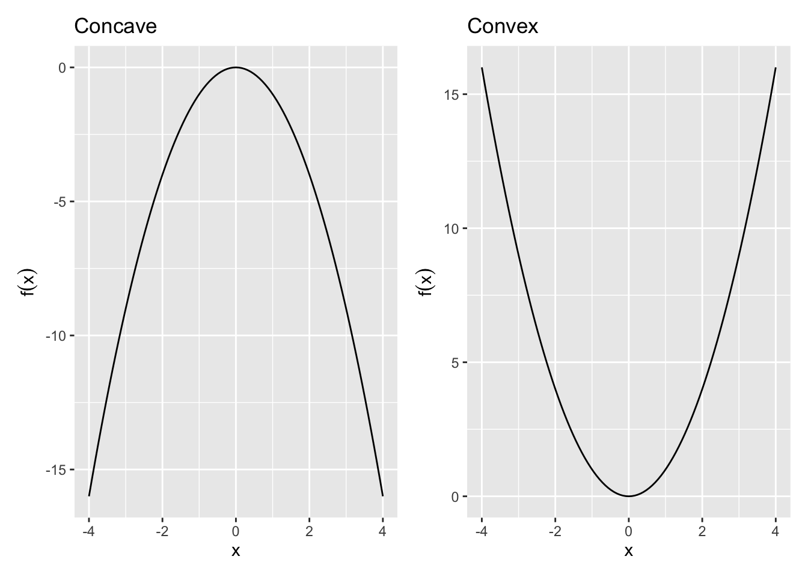

10 Optimization
To optimize, we use derivatives and calculus. Optimization is to find the maximum or minimum of a functon, and to find what value of an input gives that extremum. This has obvious uses in engineering. Many tools in the statistical toolkit use optimization. One of the most common ways of estimating a model is through “Maximum Likelihood Estimation”, done via optimizing a function (the likelihood).
Optimization also comes up in Economics, Formal Theory, and Political Economy all the time. A go-to model of human behavior is that they optimize a certain utility function. Humans are not pure utility maximizers, of course, but nuanced models of optimization – for example, adding constraints and adding uncertainty – will prove to be quite useful.
10.1 Maxima and Minima
The first derivative, f'(x), quantifies the slope of a function. Therefore, it can be used to check whether the function f(x) at the point x is increasing or decreasing at x.
- Increasing: f'(x)>0
- Decreasing: f'(x)<0
- Neither increasing nor decreasing: f'(x)=0 i.e. a maximum, minimum, or saddle point
So for example, f(x) = x^2 + 2 and f^\prime(x) = 2x
Exercise 10.1 (Plotting a mazimum and minimum)
Plot f(x)=x^3+ x^2 + 2, plot its derivative, and identifiy where the derivative is zero. Is there a maximum or minimum?
The second derivative f''(x) identifies whether the function f(x) at the point x is
- Concave / concave down: f''(x)<0
- Convex / Concave up: f''(x)>0
Maximum (Minimum): x_0 is a local maximum (minimum) if f(x_0)>f(x) (f(x_0)<f(x)) for all x within some open interval containing x_0. x_0 is a global maximum (minimum) if f(x_0)>f(x) (f(x_0)<f(x)) for all x in the domain of f.
Given the function f defined over domain D, all of the following are defined as critical points:
- Any interior point of D where f'(x)=0.
- Any interior point of D where f'(x) does not exist.
- Any endpoint that is in D.
The maxima and minima will be a subset of the critical points.
Second Derivative Test of Maxima/Minima: We can use the second derivative to tell us whether a point is a maximum or minimum of f(x).
- Local Maximum: f'(x)=0 and f''(x)<0
- Local Minimum: f'(x)=0 and f''(x)>0
- Need more info: f'(x)=0 and f''(x)=0
Global Maxima and Minima Sometimes no global max or min exists — e.g., f(x) not bounded above or below. However, there are three situations where we can fairly easily identify global max or min.
- Functions with only one critical point. If x_0 is a local max or min of f and it is the only critical point, then it is the global max or min.
- Globally concave up or concave down functions. If f''(x) is never zero, then there is at most one critical point. That critical point is a global maximum if f''<0 and a global minimum if f''>0.
- Functions over closed and bounded intervals must have both a global maximum and a global minimum.
Example 10.1 (Maxima and Minima by drawing) Find any critical points and identify whether they are a max, min, or saddle point:
- f(x)=x^2+2
- f(x)=x^3+2
- f(x)=|x^2-1|, x\in [-2,2]
10.2 Concavity of a Function
Concavity helps identify the curvature of a function, f(x), in 2 dimensional space.
Definition 10.1 (Concave Function)
A function f is strictly concave over the set S \forall x_1,x_2 \in S and \forall a \in (0,1), f(ax_1 + (1-a)x_2) > af(x_1) + (1-a)f(x_2) line connecting two points on a concave function will lie the function.

Definition 10.2 (Convex Function) Convex: A function f is strictly convex over the set S \forall x_1,x_2 \in S and \forall a \in (0,1), f(ax_1 + (1-a)x_2) < af(x_1) + (1-a)f(x_2)
Any line connecting two points on a convex function will lie above the function.
Second Derivative Test of Concavity: The second derivative can be used to understand concavity.
If
\left\{\begin{array}{lll} f''(x) < 0 & \Rightarrow & \text{Concave}\\ f''(x) > 0 & \Rightarrow & \text{Convex} \end{array}\right.
Quadratic Forms
Quadratic forms is shorthand for a way to summarize a function. This is important for finding concavity because
- Approximates local curvature around a point — e.g., used to identify max vs min vs saddle point.
- They are simple to express even in n dimensions:
- Have a matrix representation.
Quadratic Form: A polynomial where each term is a monomial of degree 2 in any number of variables:
\begin{align*} \text{One variable: }& Q(x_1) = a_{11}x_1^2\\ \text{Two variables: }& Q(x_1,x_2) = a_{11}x_1^2 + a_{12}x_1x_2 + a_{22}x_2^2\\ \text{N variables: }& Q(x_1,\cdots,x_n)=\sum\limits_{i\le j} a_{ij}x_i x_j \end{align*}
which can be written in matrix terms:
One variable
Q(\mathbf{x}) = x_1^\top a_{11} x_1
N variables: \begin{align*} Q(\mathbf{x}) &=\begin{bmatrix} x_1 & x_2 & \cdots & x_n \end{bmatrix}\begin{bmatrix} a_{11}&\frac{1}{2}a_{12}&\cdots&\frac{1}{2}a_{1n}\\ \frac{1}{2}a_{12}&a_{22}&\cdots&\frac{1}{2}a_{2n}\\ \vdots&\vdots&\ddots&\vdots\\ \frac{1}{2}a_{1n}&\frac{1}{2}a_{2n}&\cdots&a_{nn} \end{bmatrix} \begin{bmatrix} x_1\\x_2\\\vdots\\x_n\end{bmatrix}\\ &= \mathbf{x}^\top\mathbf{Ax} \end{align*}
For example, the Quadratic on \mathbb{R}^2: \begin{align*} Q(x_1,x_2)&=\begin{bmatrix} x_1& x_2 \end{bmatrix} \begin{bmatrix} a_{11}&\frac{1}{2} a_{12}\\ \frac{1}{2}a_{12}&a_{22}\end{bmatrix} \begin{bmatrix} x_1\\x_2 \end{bmatrix} \\ &= a_{11}x_1^2 + a_{12}x_1x_2 + a_{22}x_2^2 \end{align*}
Definiteness of Quadratic Forms
When the function f(\mathbf{x}) has more than two inputs, determining whether it has a maxima and minima (remember, functions may have many inputs but they have only one output) is a bit more tedious. Definiteness helps identify the curvature of a function, Q(\textbf{x}), in n dimensional space.
Definiteness: By definition, a quadratic form always takes on the value of zero when x = 0, Q(\textbf{x})=0 at \textbf{x}=0. The definiteness of the matrix \textbf{A} is determined by whether the quadratic form Q(\textbf{x})=\textbf{x}^\top\textbf{A}\textbf{x} is greater than zero, less than zero, or sometimes both over all \mathbf{x}\ne 0.
10.3 Gradient and FOC
We can see from a graphical representation that if a point is a local maxima or minima, it must meet certain conditions regarding its derivative. These are so commonly used that we refer these to “First Order Conditions” (FOCs) and “Second Order Conditions” (SOCs) in the economic tradition.
When we examined functions of one variable x, we found critical points by taking the first derivative, setting it to zero, and solving for x. For functions of n variables, the critical points are found in much the same way, except now we set the partial derivatives equal to zero. Note: We will only consider critical points on the interior of a function’s domain.
In a derivative, we only took the derivative with respect to one variable at a time. When we take the derivative separately with respect to all variables in the elements of \mathbf{x} and then express the result as a vector, we use the term Gradient and Hessian.
Definition 10.3 (Gradient) Given a function f(\textbf{x}) in n variables, the gradient \nabla f(\mathbf{x}) (the greek letter nabla ) is a row vector, where the ith element is the partial derivative of f(\textbf{x}) with respect to x_i:
\nabla f(\mathbf{x}) = \begin{bmatrix} \frac{\partial f(\mathbf{x})}{\partial x_1} & \frac{\partial f(\mathbf{x})}{\partial x_2} & \cdots & \frac{\partial f(\mathbf{x})}{\partial x_n} \end{bmatrix}
The gradient points in the direction of the steepest rate of increase at each point \mathbf{x}.
Before we know whether a point is a maxima or minima, if it meets the FOC it is a “Critical Point”.
Definition 10.4 (Critical Point)
\mathbf{x}^* is a critical point if and only if \nabla f(\mathbf{x}^*)=\mathbf{0} (the vector of zeros). If the partial derivative of f(x) with respect to x^* is 0, then \mathbf{x}^* is a critical point. To solve for \mathbf{x}^*, find the gradient, set each element equal to 0, and solve the system of equations. \mathbf{x}^* = \begin{bmatrix} x_1^*\\x_2^*\\ \vdots \\ x_n^*\end{bmatrix}
Example 10.2
Example: Given a function f(\mathbf{x})=(x_1-1)^2+x_2^2+1, find the (1) Gradient and (2) Critical point of f(\mathbf{x}).
Solution. Gradient
\begin{align*} \nabla f(\mathbf{x}) &= \begin{bmatrix} \frac{\partial f(\mathbf{x})}{\partial x_1} & \frac{\partial f(\mathbf{x})}{\partial x_2} \end{bmatrix} = \begin{bmatrix} 2(x_1-1) & 2x_2 \end{bmatrix} \end{align*}
Critical Point \mathbf{x}^*:
\begin{align*} &\frac{\partial f(\mathbf{x})}{\partial x_1} = 2(x_1-1) = 0 & \Rightarrow x_1^* = 1\\ &\frac{\partial f(\mathbf{x})}{\partial x_2} = 2x_2 = 0 & \Rightarrow x_2^* = 0\\ \end{align*}
So \mathbf{x}^* = (1,0)
10.4 Hessian and SOC
When we found a critical point for a function of one variable, we used the second derivative as a indicator of the curvature at the point in order to determine whether the point was a min, max, or saddle (second derivative test of concavity). For functions of n variables, we use second order partial derivatives as an indicator of curvature.
Definition 10.5 (Hessian) Given a function f(\mathbf{x}) in n variables, the hessian \mathbf{H(x)} is an n\times n matrix, where the (i,j)th element is the second order partial derivative of f(\mathbf{x}) with respect to x_i and x_j:
\mathbf{H(x)}=\begin{bmatrix} \frac{\partial^2 f(\mathbf{x})}{\partial x_1^2}&\frac{\partial^2f(\mathbf{x})}{\partial x_1 \partial x_2}& \cdots & \frac{\partial^2 f(\mathbf{x})}{\partial x_1 \partial x_n}\\ \frac{\partial^2 f(\mathbf{x})}{\partial x_2 \partial x_1}&\frac{\partial^2f(\mathbf{x})}{\partial x_2^2}& \cdots & \frac{\partial^2 f(\mathbf{x})}{\partial x_2 \partial x_n}\\ \vdots & \vdots & \ddots & \vdots \\ \frac{\partial^2 f(\mathbf{x})}{\partial x_n \partial x_1}&\frac{\partial^2f(\mathbf{x})}{\partial x_n \partial x_2}& \cdots & \frac{\partial^2 f(\mathbf{x})}{\partial x_n^2} \end{bmatrix}
Note that the hessian will be a symmetric matrix because \frac{\partial f(\mathbf{x})}{\partial x_1\partial x_2} = \frac{\partial f(\mathbf{x})}{\partial x_2\partial x_1}.
Also note that given that f(\mathbf{x}) is of quadratic form, each element of the hessian will be a constant.
These definitions will be employed when we determine the Second Order Conditions of a function:
Given a function f(\mathbf{x}) and a point \mathbf{x}^* such that \nabla f(\mathbf{x}^*)=0,
- Hessian is Positive Definite around \mathbf{x}^* \quad \Longrightarrow \quad Local Min
- Hessian is Negative Definite around \mathbf{x}^* \quad \Longrightarrow \quad Local Max
- Hessian is Indefinite around \mathbf{x}^* \quad \Longrightarrow \quad Saddle Point
Furthermore, there’s an easier way to check whether a 2\times 2 matrix is positive or negative definite.
Definiteness of 2 \times 2 Matrix: For a 2 \times 2 matrix
\mathbf{A}=\begin{bmatrix}A_{11} & A_{12}\\ A_{21} & A_{22}\end{bmatrix}
- If \mathrm{det}(\mathbf{A}) > 0 and A_{11}>0, then \mathbf{A} is positive definite
- If \mathrm{det}(\mathbf{A}) > 0 and A_{11}<0, then \mathbf{A} is negative definite
- If \mathrm{det}(\mathbf{A}) < 0, then \mathbf{A} is indefinite
Example 10.3 (Max and min with two dimensions)
We found that the only critical point of f(\mathbf{x})=(x_1-1)^2+x_2^2+1 is at \mathbf{x}^*=(1,0). Is it a min, max, or saddle point?
Solution. The Hessian is \begin{align*} \mathbf{H(x)} &= \begin{bmatrix} 2&0\\0&2 \end{bmatrix} \end{align*} Since \mathrm{det}(\mathbf{H}(x)) = 4 > 0 and H_{11}=2>0, the Hessian is positive definite.
Maxima, Minima, or Saddle Point? Since the Hessian is positive definite and the gradient equals 0, x^\star = (1,0) is a local minimum.
Note: Alternate check of definiteness. Is \mathbf{H(x^*)} \geq \leq 0 \quad \forall \quad \mathbf{x}\ne 0
\begin{align*} \mathbf{x}^\top H(\mathbf{x}^*) \mathbf{x} &= \begin{bmatrix} x_1 & x_2 \end{bmatrix}\\ &= \begin{bmatrix} 2&0\\0&2 \end{bmatrix}\\ \begin{bmatrix} x_1\\x_2\end{bmatrix} &= 2x_1^2+2x_2^2 \end{align*}
For any \mathbf{x}\ne 0, 2(x_1^2+x_2^2)>0, so the Hessian is positive definite and \mathbf{x}^* is a strict local minimum.
Definiteness and Concavity
Although definiteness helps us to understand the curvature of an n-dimensional function, it does not necessarily tell us whether the function is globally concave or convex.
We need to know whether a function is globally concave or convex to determine whether a critical point is a global min or max. We can use the definiteness of the Hessian to determine whether a function is globally concave or convex:
- Hessian is Positive Semidefinite \forall \mathbf{x} \quad \Longrightarrow \quad Globally Convex
- Hessian is Negative Semidefinite \forall \mathbf{x} \quad \Longrightarrow \quad Globally Concave
Notice that the definiteness conditions must be satisfied over the entire domain.
10.5 Global Maxima and Minima
Global Max/Min Conditions: Given a function f(\mathbf{x}) and a point \mathbf{x}^* such that \nabla f(\mathbf{x}^*)=0,
- f(\mathbf{x}) Globally Convex \quad \Longrightarrow \quad Global Min
- f(\mathbf{x}) Globally Concave \quad \Longrightarrow \quad Global Max
Note that showing that \mathbf{H(x^*)} is negative semidefinite is not enough to guarantee \mathbf{x}^* is a local max. However, showing that \mathbf{H(x)} is negative semidefinite for all \mathbf{x} guarantees that x^* is a global max. (The same goes for positive semidefinite and minima.)
Example 10.4 Take f_1(x)=x^4 and f_2(x)=-x^4.
- Both have x=0 as a critical point.
- Unfortunately, f''_1(0)=0 and f''_2(0)=0, so we can’t tell whether x=0 is a min or max for either. However, f''_1(x)=12x^2 and f''_2(x)=-12x^2.
- For all x, f''_1(x)\ge 0 and f''_2(x)\le 0 — i.e., f_1(x) is globally convex and f_2(x) is globally concave.
- So x=0 is a global min of f_1(x) and a global max of f_2(x).
Exercise 10.2
Given f(\mathbf{x})=x_1^3-x_2^3+9x_1x_2, find any maxima or minima.
Solution.
- First order conditions
- Gradient \nabla f(\mathbf{x}) \begin{bmatrix} \frac{\partial f}{\partial x_1} \\ \frac{\partial f}{\partial x_2}\end{bmatrix} = \begin{bmatrix} 3x_1^2+9x_2 \\ -3x_2^2+9x_1 \end{bmatrix}
- Critical Points \mathbf{x^*}
- Set the gradient equal to zero and solve for x_1 and x_2. We have two equations and two unknowns. Solving for x_1 and x_2, we get two critical points: \mathbf{x}_1^*=(0,0) and \mathbf{x}_2^*=(3,-3).
- 3x_1^2 + 9x_2 = 0 \quad \Rightarrow \quad 9x_2 = -3x_1^2 \quad \Rightarrow \quad x_2 = -\frac{1}{3}x_1^2
- -3x_2^2 + 9x_1 = 0 \quad \Rightarrow \quad -3(-\frac{1} {3}x_1^2)^2 + 9x_1 = 0
- \Rightarrow \quad -\frac{1}{3}x_1^4 + 9x_1 = 0 \quad \Rightarrow \quad x_1^3 = 27x_1 \quad \Rightarrow \quad x_1 = 3
- 3(3)^2 + 9x_2 = 0 \quad \Rightarrow \quad x_2 = -3
- Second order conditions.
-
Hessian \mathbf{H(x)}
\begin{bmatrix} 6x_1&9\\9&-6x_2 \end{bmatrix}
-
Hessian \mathbf{H(x_1^*)}
\begin{bmatrix} 0&9\\9&0\end{bmatrix}
-
Leading principal minors of \mathbf{H(x_1^*)}
M_1=0; M_2=-81
-
Definiteness of \mathbf{H(x_1^*)}?
- \mathbf{H(x_1^*)} is indefinite
-
Maxima, Minima, or Saddle Point for \mathbf{x_1^*}?
- Since \mathbf{H(x_1^*)} is indefinite, \mathbf{x}_1^*=(0,0) is a saddle point.
-
Hessian
\mathbf{H(x_2^*)}=\begin{bmatrix} 18&9\\9&18\end{bmatrix}
-
Leading principal minors of \mathbf{H(x_2^*)}
M_1=18; M_2=243
-
Definiteness of \mathbf{H(x_2^*)}?
- \mathbf{H(x_2^*)} is positive definite
-
Maxima, Minima, or Saddle Point for \mathbf{x}_2^*?
- Since \mathbf{H(x_2^*)} is positive definite, \mathbf{x}_1^*=(3,-3) is a strict local minimum
-
- Global concavity/convexity.
- Is f(x) globally concave/convex?
- No. In evaluating the Hessians for \mathbf{x}_1^* and \mathbf{x}_2^* we saw that the Hessian is not positive semidefinite at x = (0,0).
- Are any \mathbf{x^*} global minima or maxima?
- No. Since the function is not globally concave/convex, we can’t infer that \mathbf{x}_2^*=(3,-3) is a global minimum. In fact, if we set x_1=0, the f(\mathbf{x})=-x_2^3, which will go to -\infty as x_2\to \infty.
- Is f(x) globally concave/convex?